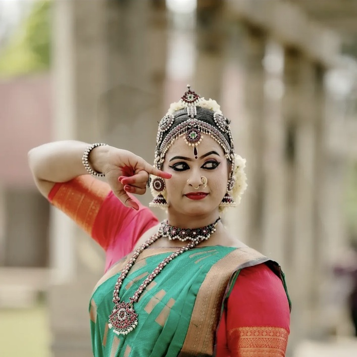

01 · INDIAN CLASSICAL
Bharatanatyam
A rich classical tradition bringing together strong lines, intricate footwork, expressive abhinaya and rhythmic precision.
Adavus · Mudras · Abhinaya · TalaTHE TIMELESS LANGUAGE OF INDIAN ART
Classical dance training rooted in culture, discipline and expression.
OUR CLASSICAL DISCIPLINES
Chilamboli places Indian classical dance at the centre of its learning journey, nurturing technique, rhythm, expression and stage confidence.
A rich classical tradition bringing together strong lines, intricate footwork, expressive abhinaya and rhythmic precision.
Adavus · Mudras · Abhinaya · Tala
Kerala’s graceful lasya tradition, known for gentle swaying movements, lyrical rhythm and nuanced expression.
Lasya · Grace · Expression · Rhythm
A vibrant classical form celebrated for expressive storytelling, fluid movement and dynamic rhythmic patterns.
Storytelling · Nritta · Abhinaya
A lyrical dance tradition distinguished by sculptural poses, graceful torso movement and devotional expression.
Tribhangi · Chowka · Abhinaya
A North Indian classical tradition known for intricate footwork, elegant spins, rhythmic dialogue and storytelling.
tatkar · Chakkars · Gat · Abhinaya
Celebrate the diverse movement traditions and cultural expressions that make Kerala’s performing arts heritage unique.
Culture · Rhythm · Community · HeritageCourse levels, age groups, class schedules and availability are shared directly by the academy. Contact us to find the right learning path.